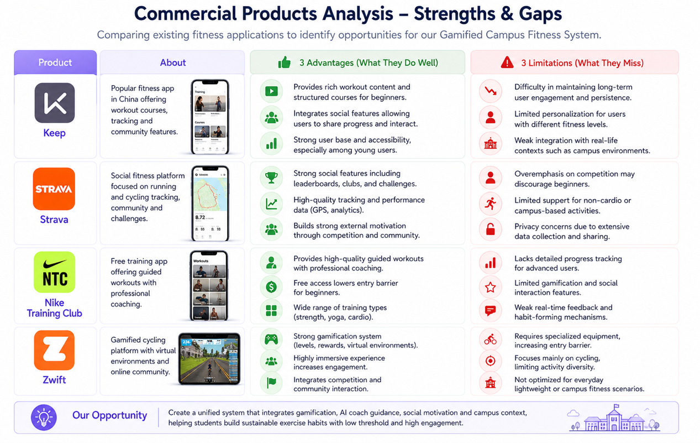

Lazy beginner college students
Freshmen and sophomores with no fixed exercise habits, low fitness foundation and weak self-discipline. They need simple entry points and visible motivation.
The project selected the Active Campus Health Promotion track and focused on improving exercise motivation, professional guidance and sustainable participation among college students.
Our group chose the Active Campus Health Promotion track as the core direction, focusing on solving the lack of motivation and persistence among college students in daily exercise.

The persona analysis identifies different user groups and clarifies how motivation, guidance and usability needs vary across campus fitness scenarios.
Freshmen and sophomores with no fixed exercise habits, low fitness foundation and weak self-discipline. They need simple entry points and visible motivation.
Students who want to keep fit but cannot form continuous habits. They need feedback, goal tracking and a reason to return every day.
Students who want to improve physical fitness but lack access to coaches. They value personalized advice and safe training recommendations.
Teachers and management staff need reliable exercise participation data to understand student activity and support campus health promotion.
Most users lack long-term motivation because progress tracking and reward feedback are not clear enough in traditional fitness experiences.
Users prefer simple and fast interactions, especially for daily check-in tasks, and tend to abandon systems with complex operation paths.
User research was conducted through interviews and field observation among campus students and fitness practitioners.
A senior personal trainer with six years of frontline teaching experience discussed common fitness misconceptions, beginner advice and long-term consistency.
An archery assistant coach shared the meaning of sports, the charm of archery and how students can develop long-term exercise interest.
A senior fitness coach emphasized that movement correction should be slow and thorough rather than blindly increasing weight.
An amateur fitness enthusiast described plateau periods, motivation fluctuations and the value of recording every training session.
A fitness novice explained that beginners are often more afraid of mistakes and injuries than actual movement difficulty.